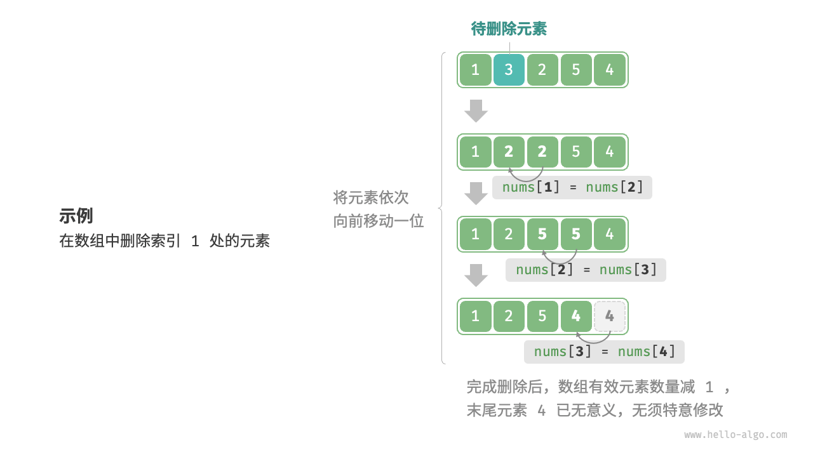

数组
「数组 array」是一种线性数据结构，其将相同类型的元素存储在连续的内存空间中。我们将元素在数组中的位置称为该元素的「索引 index」。下图展示了数组的主要概念和存储方式。

数组常用操作
初始化数组
我们可以根据需求选用数组的两种初始化方式：无初始值、给定初始值。在未指定初始值的情况下，大多数编程语言会将数组元素初始化为 $0$ ：
"Python"
python title="array.py" // 初始化数组 arr: list[int] = [0] * 5 // [ 0, 0, 0, 0, 0 ] nums: list[int] = [1, 3, 2, 5, 4]"C++"
cpp title="array.cpp" /* 初始化数组 */ // 存储在栈上 int arr[5]; int nums[5] = { 1, 3, 2, 5, 4 }; // 存储在堆上（需要手动释放空间） int* arr1 = new int[5]; int* nums1 = new int[5] { 1, 3, 2, 5, 4 };"Java"
java title="array.java" /* 初始化数组 */ int[] arr = new int[5]; // { 0, 0, 0, 0, 0 } int[] nums = { 1, 3, 2, 5, 4 };"C#"
csharp title="array.cs" /* 初始化数组 */ int[] arr = new int[5]; // [ 0, 0, 0, 0, 0 ] int[] nums = [1, 3, 2, 5, 4];"Go"
go title="array.go" /* 初始化数组 */ var arr [5]int // 在 Go 中，指定长度时（[5]int）为数组，不指定长度时（[]int）为切片 // 由于 Go 的数组被设计为在编译期确定长度，因此只能使用常量来指定长度 // 为了方便实现扩容 extend() 方法，以下将切片（Slice）看作数组（Array） nums := []int{1, 3, 2, 5, 4}"Swift"
swift title="array.swift" /* 初始化数组 */ let arr = Array(repeating: 0, count: 5) // [0, 0, 0, 0, 0] let nums = [1, 3, 2, 5, 4]"JS"
javascript title="array.js" /* 初始化数组 */ var arr = new Array(5).fill(0); var nums = [1, 3, 2, 5, 4];"TS"
typescript title="array.ts" /* 初始化数组 */ let arr: number[] = new Array(5).fill(0); let nums: number[] = [1, 3, 2, 5, 4];"Dart"
dart title="array.dart" /* 初始化数组 */ List<int> arr = List.filled(5, 0); // [0, 0, 0, 0, 0] List<int> nums = [1, 3, 2, 5, 4];"Rust"
rust title="array.rs" /* 初始化数组 */ let arr: Vec<i32> = vec![0; 5]; // [0, 0, 0, 0, 0] let nums: Vec<i32> = vec![1, 3, 2, 5, 4];"C"
c title="array.c" /* 初始化数组 */ int arr[5] = { 0 }; // { 0, 0, 0, 0, 0 } int nums[5] = { 1, 3, 2, 5, 4 };"Zig"
zig title="array.zig" // 初始化数组 var arr = [_]i32{0} ** 5; // { 0, 0, 0, 0, 0 } var nums = [_]i32{ 1, 3, 2, 5, 4 };
访问元素
数组元素被存储在连续的内存空间中，这意味着计算数组元素的内存地址非常容易。给定数组内存地址（首元素内存地址）和某个元素的索引，我们可以使用下图所示的公式计算得到该元素的内存地址，从而直接访问该元素。

观察上图，我们发现数组首个元素的索引为 $0$ ，这似乎有些反直觉，因为从 $1$ 开始计数会更自然。但从地址计算公式的角度看，索引本质上是内存地址的偏移量。首个元素的地址偏移量是 $0$ ，因此它的索引为 $0$ 是合理的。
在数组中访问元素非常高效，我们可以在 $O(1)$ 时间内随机访问数组中的任意一个元素。
"Python"
def random_access(nums: list[int]) -> int: """随机访问元素""" // 在区间 [0, len(nums)-1] 中随机抽取一个数字 random_index = random.randint(0, len(nums) - 1) // 获取并返回随机元素 random_num = nums[random_index] return random_num"C++"
/* 随机访问元素 */ int randomAccess(int *nums, int size) { // 在区间 [0, size) 中随机抽取一个数字 int randomIndex = rand() % size; // 获取并返回随机元素 int randomNum = nums[randomIndex]; return randomNum; }"Java"
/* 随机访问元素 */ int randomAccess(int[] nums) { // 在区间 [0, nums.length) 中随机抽取一个数字 int randomIndex = ThreadLocalRandom.current().nextInt(0, nums.length); // 获取并返回随机元素 int randomNum = nums[randomIndex]; return randomNum; }
// 插入元素
数组元素在内存中是“紧挨着的”，它们之间没有空间再存放任何数据。如下图所示，如果想在数组中间插入一个元素，则需要将该元素之后的所有元素都向后移动一位，之后再把元素赋值给该索引。

值得注意的是，由于数组的长度是固定的，因此插入一个元素必定会导致数组尾部元素“丢失”。我们将这个问题的解决方案留在“列表”章节中讨论。
"Python"
def insert(nums: list[int], num: int, index: int): """在数组的索引 index 处插入元素 num""" // 把索引 index 以及之后的所有元素向后移动一位 for i in range(len(nums) - 1, index, -1): nums[i] = nums[i - 1] // 将 num 赋给 index 处的元素 nums[index] = num"C++"
/* 在数组的索引 index 处插入元素 num */ void insert(int *nums, int size, int num, int index) { // 把索引 index 以及之后的所有元素向后移动一位 for (int i = size - 1; i > index; i--) { nums[i] = nums[i - 1]; } // 将 num 赋给 index 处的元素 nums[index] = num; }"Java"
/* 在数组的索引 index 处插入元素 num */ void insert(int[] nums, int num, int index) { // 把索引 index 以及之后的所有元素向后移动一位 for (int i = nums.length - 1; i > index; i--) { nums[i] = nums[i - 1]; } // 将 num 赋给 index 处的元素 nums[index] = num; }
删除元素
同理，如下图所示，若想删除索引 $i$ 处的元素，则需要把索引 $i$ 之后的元素都向前移动一位。

请注意，删除元素完成后，原先末尾的元素变得“无意义”了，所以我们无须特意去修改它。
"Python"
def remove(nums: list[int], index: int): """删除索引 index 处的元素""" // 把索引 index 之后的所有元素向前移动一位 for i in range(index, len(nums) - 1): nums[i] = nums[i + 1]"C++"
/* 删除索引 index 处的元素 */ void remove(int *nums, int size, int index) { // 把索引 index 之后的所有元素向前移动一位 for (int i = index; i < size - 1; i++) { nums[i] = nums[i + 1]; } }"Java"
/* 删除索引 index 处的元素 */ void remove(int[] nums, int index) { // 把索引 index 之后的所有元素向前移动一位 for (int i = index; i < nums.length - 1; i++) { nums[i] = nums[i + 1]; } }
总的来看，数组的插入与删除操作有以下缺点。
- 时间复杂度高：数组的插入和删除的平均时间复杂度均为 $O(n)$ ，其中 $n$ 为数组长度。
- 丢失元素：由于数组的长度不可变，因此在插入元素后，超出数组长度范围的元素会丢失。
- 内存浪费：我们可以初始化一个比较长的数组，只用前面一部分，这样在插入数据时，丢失的末尾元素都是“无意义”的，但这样做会造成部分内存空间浪费。
遍历数组
在大多数编程语言中，我们既可以通过索引遍历数组，也可以直接遍历获取数组中的每个元素：
"Python"
def traverse(nums: list[int]): """遍历数组""" count = 0 // 通过索引遍历数组 for i in range(len(nums)): count += nums[i] // 直接遍历数组元素 for num in nums: count += num // 同时遍历数据索引和元素 for i, num in enumerate(nums): count += nums[i] count += num"C++"
/* 遍历数组 */ void traverse(int *nums, int size) { int count = 0; // 通过索引遍历数组 for (int i = 0; i < size; i++) { count += nums[i]; } }"Java"
/* 遍历数组 */ void traverse(int[] nums) { int count = 0; // 通过索引遍历数组 for (int i = 0; i < nums.length; i++) { count += nums[i]; } // 直接遍历数组元素 for (int num : nums) { count += num; } }
查找元素
在数组中查找指定元素需要遍历数组，每轮判断元素值是否匹配，若匹配则输出对应索引。
因为数组是线性数据结构，所以上述查找操作被称为“线性查找”。
"Python"
def find(nums: list[int], target: int) -> int: """在数组中查找指定元素""" for i in range(len(nums)): if nums[i] == target: return i return -1"C++"
/* 在数组中查找指定元素 */ int find(int *nums, int size, int target) { for (int i = 0; i < size; i++) { if (nums[i] == target) return i; } return -1; }"Java"
/* 在数组中查找指定元素 */ int find(int[] nums, int target) { for (int i = 0; i < nums.length; i++) { if (nums[i] == target) return i; } return -1; }
扩容数组
在复杂的系统环境中，程序难以保证数组之后的内存空间是可用的，从而无法安全地扩展数组容量。因此在大多数编程语言中，数组的长度是不可变的。
如果我们希望扩容数组，则需重新建立一个更大的数组，然后把原数组元素依次复制到新数组。这是一个 $O(n)$ 的操作，在数组很大的情况下非常耗时。代码如下所示：
"Python"
def extend(nums: list[int], enlarge: int) -> list[int]: """扩展数组长度""" // 初始化一个扩展长度后的数组 res = [0] * (len(nums) + enlarge) // 将原数组中的所有元素复制到新数组 for i in range(len(nums)): res[i] = nums[i] // 返回扩展后的新数组 return res"C++"
/* 扩展数组长度 */ int *extend(int *nums, int size, int enlarge) { // 初始化一个扩展长度后的数组 int *res = new int[size + enlarge]; // 将原数组中的所有元素复制到新数组 for (int i = 0; i < size; i++) { res[i] = nums[i]; } // 释放内存 delete[] nums; // 返回扩展后的新数组 return res; }"Java"
/* 扩展数组长度 */ int[] extend(int[] nums, int enlarge) { // 初始化一个扩展长度后的数组 int[] res = new int[nums.length + enlarge]; // 将原数组中的所有元素复制到新数组 for (int i = 0; i < nums.length; i++) { res[i] = nums[i]; } // 返回扩展后的新数组 return res; }
数组的优点与局限性
数组存储在连续的内存空间内，且元素类型相同。这种做法包含丰富的先验信息，系统可以利用这些信息来优化数据结构的操作效率。
- 空间效率高：数组为数据分配了连续的内存块，无须额外的结构开销。
- 支持随机访问：数组允许在 $O(1)$ 时间内访问任何元素。
- 缓存局部性：当访问数组元素时，计算机不仅会加载它，还会缓存其周围的其他数据，从而借助高速缓存来提升后续操作的执行速度。
连续空间存储是一把双刃剑，其存在以下局限性。
- 插入与删除效率低：当数组中元素较多时，插入与删除操作需要移动大量的元素。
- 长度不可变：数组在初始化后长度就固定了，扩容数组需要将所有数据复制到新数组，开销很大。
- 空间浪费：如果数组分配的大小超过实际所需，那么多余的空间就被浪费了。
数组典型应用
数组是一种基础且常见的数据结构，既频繁应用在各类算法之中，也可用于实现各种复杂数据结构。
- 随机访问：如果我们想随机抽取一些样本，那么可以用数组存储，并生成一个随机序列，根据索引实现随机抽样。
- 排序和搜索：数组是排序和搜索算法最常用的数据结构。快速排序、归并排序、二分查找等都主要在数组上进行。
- 查找表：当需要快速查找一个元素或其对应关系时，可以使用数组作为查找表。假如我们想实现字符到 ASCII 码的映射，则可以将字符的 ASCII 码值作为索引，对应的元素存放在数组中的对应位置。
- 机器学习：神经网络中大量使用了向量、矩阵、张量之间的线性代数运算，这些数据都是以数组的形式构建的。数组是神经网络编程中最常使用的数据结构。
- 数据结构实现：数组可以用于实现栈、队列、哈希表、堆、图等数据结构。例如，图的邻接矩阵表示实际上是一个二维数组。